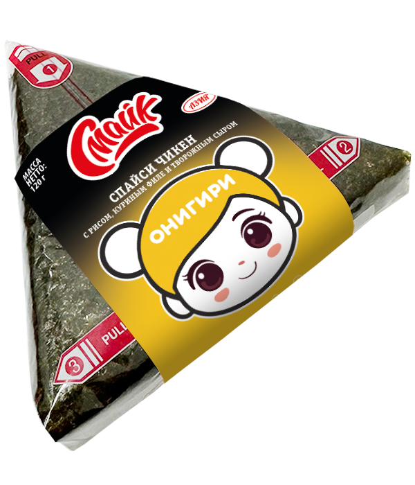

Онигири спайси чикен

Состав:
рис, куриное филе, творожный сыр, нори.
Масса нетто:
120 г.
Пищевая и энергетическая ценность в 100 г продукта (средние значения):
Белки
– 5,3 г.
Жиры
– 6,2 г.
Углеводы
– 31,1 г.
Калорийность
– 201 ккал / 847 кДж.
Закрыть окно